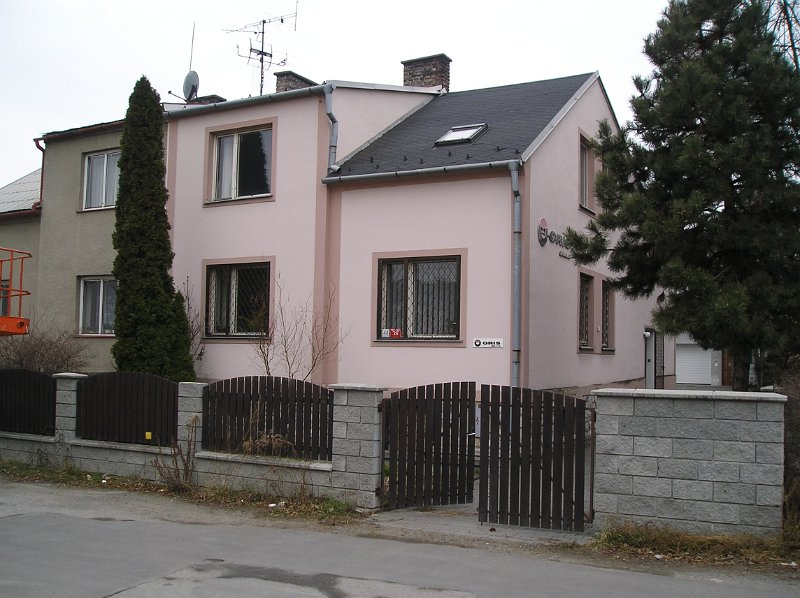
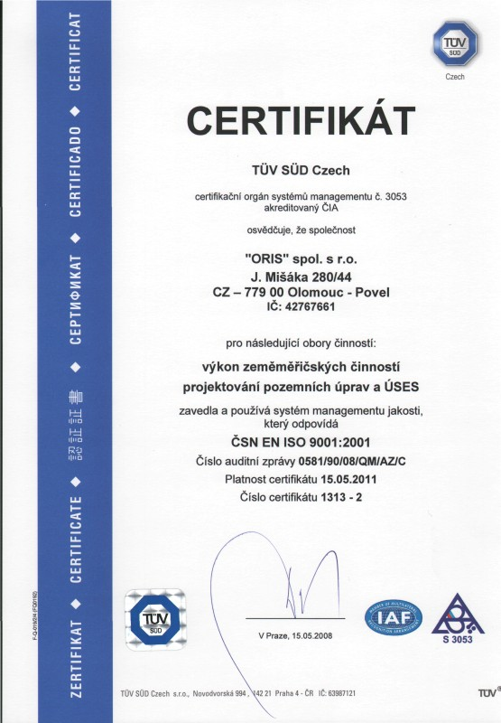
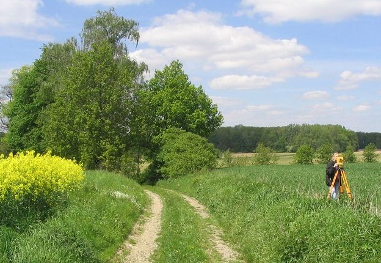
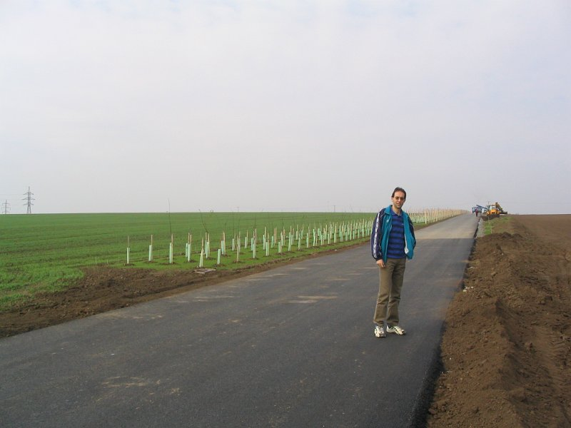
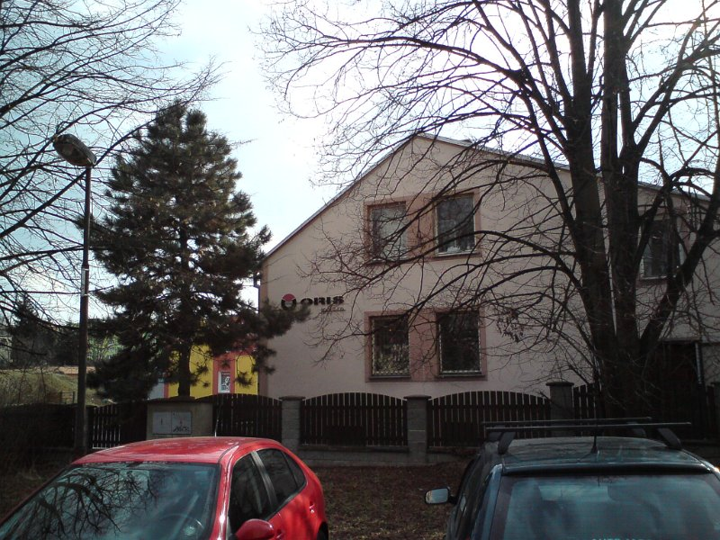
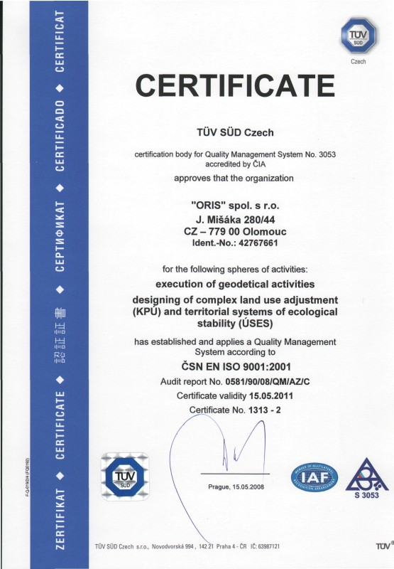

Komplexní geodetické práce v investiční výstavbě, geometrické plány, vytyčování pozemků a speciální průmyslová geodézie s certifikací ČSN EN ISO 9001



Veškeré autentické informace, historie, provozní údaje a identifikační data naší společnosti.
Společnost ORIS Olomouc s.r.o. navazuje na činnost geodetické kanceláře založené v roce 1991. Od roku 1999 působí jako společnost s ručením omezeným (IČO 25836770) ve vlastním sídle na Přerovské 434/54 v Olomouci - Hodolanech.
Poskytujeme komplexní geodetické služby v investiční výstavbě (dopravní, vodohospodářské, průmyslové a občanské stavby), práce v katastru nemovitostí (geometrické plány, vytyčování hranic pozemků) a speciální inženýrskou geodézii (měření posunů a přetvoření staveb, jeřábové dráhy, 3D digitální modely terénu). Veškeré výsledky ověřujeme úředně oprávněnými zeměměřickými inženýry (ÚOZI).
Jsme držiteli certifikátu systému managementu kvality dle ČSN EN ISO 9001:2016 pro obor: Geodetické práce v investiční výstavbě a v katastru nemovitostí. V terénu pracujeme s přesnými totálními stanicemi, digitálními nivelačními přístroji a GNSS aparaturami Leica Geosystems.
| Obchodní firma | ORIS Olomouc s.r.o. |
| Sídlo společnosti | Přerovská 434/54, Hodolany, 779 00 Olomouc |
| IČO / DIČ | 25836770 / CZ25836770 |
| Spisová značka / Datová schránka | C 20885 u KS v Ostravě | ID datové schránky: bsv5r78 |
| Jednatelé společnosti | Ing. Antonín Haluza (+420 602 744 260) a Jaroslav Křížek (+420 602 744 261) |
| Pevná linka / E-mail | +420 585 313 106 | info@oris-olomouc.cz |
Zahájení zeměměřické činnosti pro občany, obce a stavební společnosti ve střední Moravě.
Zápis společnosti u Krajského soudu v Ostravě, oddíl C, vložka 20885, jednatelé Ing. Antonín Haluza a Jaroslav Křížek.
Pravidelně obhajovaný certifikát kvality (v české i anglické mutaci) pro náročné státní a korporátní investory.
Geodetické zajištění výstavby dálnice D47, železničních koridorů, tramvajové tratě v Olomouci, Šantovky a FN Olomouc.
Kompletní rozpis všech kategorií, materiálů, technologií a služeb podle našeho katalogu.
Kompletní geodetický servis od předprojektové přípravy přes realizaci stavby až po kolaudaci pro dálniční, železniční, průmyslové a bytové stavby.
Veškeré zeměměřické činnosti pro zápis právních vztahů k nemovitostem do Katastru nemovitostí ČR včetně ověření ÚOZI.
Vysoce přesná geodetická měření pro průmyslové haly, mostní konstrukce, energetiku a správu majetku.
Špičková měřicí technika Leica Geosystems a výpočetní software zaručují kompatibilitu výstupů se všemi projekčními systémy.
Přehledně zpracované kompletní tabulky, ceníky, technické specifikace a referenční zakázky.
Přímé telefonní a e-mailové kontakty na jednatele, geodety a sekretariát.
| Jméno a příjmení | Funkce ve společnosti | Mobilní telefon | E-mailová adresa |
|---|---|---|---|
| Ing. Antonín Haluza | Jednatel společnosti, geodet | +420 602 744 260 | haluza@oris-olomouc.cz |
| Jaroslav Křížek | Jednatel společnosti, geodet | +420 602 744 261 | krizek@oris-olomouc.cz |
| Ing. Josef Hradil | Geodet – zakázky v investiční výstavbě | +420 602 569 789 | hradil@oris-olomouc.cz |
| Jan Křížek | Geodet – zakázky a měření v terénu | +420 602 794 749 | jan.krizek@oris-olomouc.cz |
| Bc. Andrea Kvapilová | Geodetka – katastr a dokumentace | +420 724 522 140 | kvapilova@oris-olomouc.cz |
| Martin Štefka | Geodet – inženýrská geodézie | +420 724 919 885 | stefka@oris-olomouc.cz |
| Ing. Lubomír Vrána | Geodet – speciální měření a projekční podklady | +420 724 522 141 | vrana@oris-olomouc.cz |
| Ivana Srostlíková | Sekretariát a administrativa | +420 724 522 139 / 585 313 106 | info@oris-olomouc.cz |
Výběr klíčových dopravních, železničních, vodohospodářských a pozemních staveb zajišťovaných naší společností.
| Kategorie stavby | Název referenční akce | Rozsah geodetických prací |
|---|---|---|
| Dálniční stavby | Dálnice D47 – stavba 4704 Bělotín – Hladké Životice | Komplexní geodetické práce při výstavbě dálničního úseku a mostních objektů |
| Silniční stavby | Přeložka silnice I/44 Červenohorské sedlo – jih a Vlachov – Rájec | Vytyčování, kontrolní měření, výpočty kubatur a dokumentace skutečného provedení |
| Železniční koridory | Optimalizace trati Červenka – Zábřeh na Moravě a uzlu Olomouc | Inženýrská geodézie při modernizaci železničního koridoru |
| Městská doprava | Nová tramvajová trať v Olomouci (etapa Trnkova – Nové Sady) | Geodetické zajištění výstavby tramvajové tratě a inženýrských sítí |
| Vodohospodářské stavby | Protipovodňová opatření města Olomouce a čistírny odpadních vod | Polohopisné a výškopisné podklady, vytyčování a skutečné provedení vodních děl |
| Občanská a komerční výstavba | Galerie Šantovka Olomouc, Fakultní nemocnice Olomouc, CPI City Center | Geodetický dozor, vytyčování monolitických a ocelových konstrukcí, GP ke kolaudaci |
Prohlédněte si kompletní databázi našich autentických fotografií rozdělenou do přehledných kategorií. Kliknutím na libovolný snímek otevřete detailní náhled na celou obrazovku.



Neváhejte nám zavolat, napsat e-mail nebo nás osobně navštívit na uvedené adrese.
Přerovská 434/54, 779 00 Olomouc - Hodolany
Po–Pá: 7:00 – 15:30
IČO: 25836770 | DIČ: CZ25836770 | Doména: oris-olomouc.cz
Vyplňte krátký formulář níže – ozveme se vám zpět v nejbližším možném termínu.